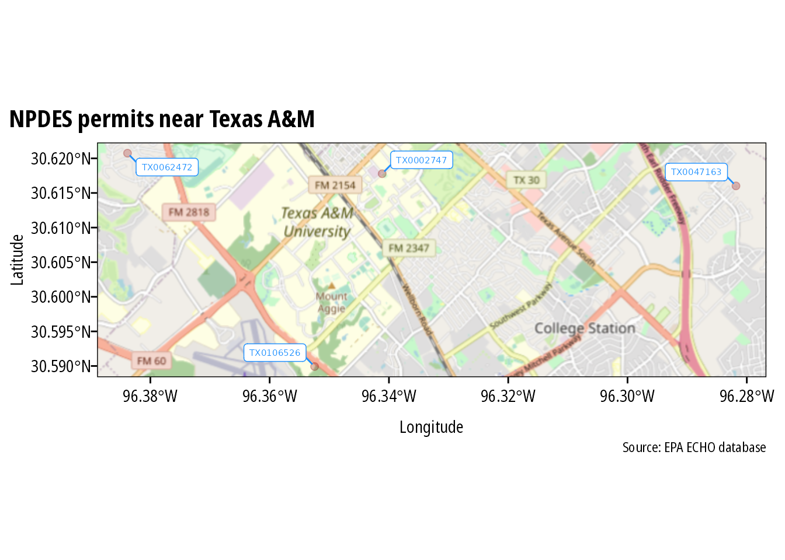

Overview
echor downloads wastewater discharge and air emission data for EPA permitted facilities using the EPA ECHO API.
Installation
echor is on CRAN:
install.packages("echor")Or install the development version from github:
remotes::install_github("mps9506/echor")Examples
Download information about facilities with an NPDES permit
We can look up plants by permit id, bounding box, and numerous other parameters. I plan on providing documentation of available parameters. However, arguments can be looked up here: get_cwa_rest_services_get_facility_info
library(echor)
## echoWaterGetFacilityInfo() will return a dataframe or simple features (sf) dataframe.
df <- echoWaterGetFacilityInfo(output = "df",
xmin = '-96.387509',
ymin = '30.583572',
xmax = '-96.281422',
ymax = '30.640008',
p_ptype = "NPD")
head(df)
#> # A tibble: 4 × 26
#> CWPName SourceID CWPStreet CWPCity CWPState CWPStateDistrict CWPZip
#> <chr> <chr> <chr> <chr> <chr> <chr> <dbl>
#> 1 CARTER CREEK WWTP TX00471… 2200 NOR… COLLEG… TX 09 77845
#> 2 CENTRAL UTILITY P… TX00027… 222 IREL… COLLEG… TX 09 77843
#> 3 HEAT TRANSFER RES… TX01065… 0.25MI S… COLLEG… TX 09 77845
#> 4 TURKEY CREEK WWTP TX00624… 3000FT W… BRYAN TX 09 77807
#> # … with 19 more variables: MasterExternalPermitNmbr <lgl>, RegistryID <dbl>,
#> # CWPCounty <chr>, CWPEPARegion <chr>, FacDerivedHuc <dbl>,
#> # CWPNAICSCodes <lgl>, FacLat <dbl>, FacLong <dbl>,
#> # CWPTotalDesignFlowNmbr <dbl>, DschToMs4 <lgl>, ExposedActivity <lgl>,
#> # NPDESDataGroupsDescs <chr>, MsgpFacilityInspctnSmmry <lgl>,
#> # MsgpCorrectiveActionSmmry <lgl>, AIRIDs <lgl>, NPDESIDs <chr>,
#> # SDWAIDs <lgl>, CWPDateLastInspSt <date>, VioLastYear <dbl>The ECHO database can provide over 270 different columns. echor returns a subset of these columns that should work for most users. However, you can specify what data you want returned. Use echoWaterGetMeta() to return a dataframe with column numbers, names, and descriptions to identify the columns you want returned. Then include the column numbers as a comma separated string in the qcolumns argument. In the example below, the qcolumns argument indicates the dataframe will include plant name, 8-digit HUC, latitude, longitude, and total design flow.
df <- echoWaterGetFacilityInfo(output = "df",
xmin = '-96.387509',
ymin = '30.583572',
xmax = '-96.281422',
ymax = '30.640008',
qcolumns = '1,14,23,24,25',
p_ptype = "NPD")
head(df)
#> # A tibble: 4 × 6
#> CWPName SourceID FacDerivedHuc CWPNAICSCodes FacLat FacLong
#> <chr> <chr> <dbl> <lgl> <dbl> <dbl>
#> 1 CARTER CREEK WWTP TX0047163 12070103 NA 30.6 -96.3
#> 2 CENTRAL UTILITY PLANT TX0002747 12070103 NA 30.6 -96.3
#> 3 HEAT TRANSFER RESEARCH TX0106526 12070101 NA 30.6 -96.4
#> 4 TURKEY CREEK WWTP TX0062472 12070101 NA 30.6 -96.4When returned as sf dataframes, the data is suitable for immediate spatial plotting or analysis:
library(ggspatial)
library(sf)
library(ggrepel)
library(purrr)
df <- echoWaterGetFacilityInfo(output = "sf",
xmin = '-96.387509',
ymin = '30.583572',
xmax = '-96.281422',
ymax = '30.640008',
p_ptype = "NPD")
##to make labels, need to map the coords and use geom_text :(
## can't help but think there is an easier way to do this
df <- df %>%
mutate(
coords = map(geometry, st_coordinates),
coords_x = map_dbl(coords, 1),
coords_y = map_dbl(coords, 2)
)
ggplot(df) +
annotation_map_tile(zoomin = -1, progress = "none") +
geom_sf(inherit.aes = FALSE, shape = 21,
color = "darkred", fill = "darkred",
size = 2, alpha = 0.25) +
geom_label_repel(data = df, aes(x = coords_x, y = coords_y, label = SourceID),
point.padding = .5, min.segment.length = 0.1,
size = 2, color = "dodgerblue") +
theme_mps_noto() +
labs(x = "Longitude", y = "Latitude",
title = "NPDES permits near Texas A&M",
caption = "Source: EPA ECHO database")
Download discharge/emissions data
Use echoGetEffluent() or echoGetCAAPR() to download tidy dataframes of permitted water discharger Discharge Monitoring Report (DMR) or permitted emitters Clean Air Act annual emissions reports. Please note that all variables are returned as character vectors.
df <- echoGetEffluent(p_id = 'tx0119407', parameter_code = '00300')
df <- df %>%
mutate(dmr_value_nmbr = as.numeric(dmr_value_nmbr),
monitoring_period_end_date = as.Date(monitoring_period_end_date,
"%m/%d/%Y")) %>%
filter(!is.na(dmr_value_nmbr) & limit_value_type_code == "C1")
ggplot(df) +
geom_line(aes(monitoring_period_end_date, dmr_value_nmbr)) +
theme_mps_noto() +
labs(x = "Monitoring period date",
y = "Dissolved oxygen concentration (mg/l)",
title = "Reported minimum dissolved oxygen concentration",
subtitle = "NPDES ID = TX119407",
caption = "Source: EPA ECHO")
Session Info
sessioninfo::platform_info()
#> setting value
#> version R version 4.2.0 (2022-04-22)
#> os Ubuntu 20.04.4 LTS
#> system x86_64, linux-gnu
#> ui X11
#> language (EN)
#> collate C.UTF-8
#> ctype C.UTF-8
#> tz UTC
#> date 2022-05-02
#> pandoc 2.14.2 @ /usr/bin/ (via rmarkdown)
sessioninfo::package_info()
#> ! package * version date (UTC) lib source
#> P abind 1.4-5 2016-07-21 [?] CRAN (R 4.2.0)
#> P bit 4.0.4 2020-08-04 [?] CRAN (R 4.2.0)
#> P bit64 4.0.5 2020-08-30 [?] CRAN (R 4.2.0)
#> class 7.3-20 2022-01-16 [2] CRAN (R 4.2.0)
#> P classInt 0.4-3 2020-04-07 [?] CRAN (R 4.2.0)
#> cli 3.3.0 2022-04-25 [1] CRAN (R 4.2.0)
#> codetools 0.2-18 2020-11-04 [2] CRAN (R 4.2.0)
#> colorspace 2.0-3 2022-02-21 [1] CRAN (R 4.2.0)
#> P crayon 1.5.1 2022-03-26 [?] CRAN (R 4.2.0)
#> P curl 4.3.2 2021-06-23 [?] CRAN (R 4.2.0)
#> P DBI 1.1.2 2021-12-20 [?] CRAN (R 4.2.0)
#> P digest 0.6.29 2021-12-01 [?] CRAN (R 4.2.0)
#> dplyr * 1.0.9 2022-04-28 [1] CRAN (R 4.2.0)
#> P e1071 1.7-9 2021-09-16 [?] CRAN (R 4.2.0)
#> echor * 0.1.6.9000 2022-05-02 [1] local
#> P ellipsis 0.3.2 2021-04-29 [?] CRAN (R 4.2.0)
#> P evaluate 0.15 2022-02-18 [?] CRAN (R 4.2.0)
#> fansi 1.0.3 2022-03-24 [1] CRAN (R 4.2.0)
#> P farver 2.1.0 2021-02-28 [?] CRAN (R 4.2.0)
#> P fastmap 1.1.0 2021-01-25 [?] CRAN (R 4.2.0)
#> P fs 1.5.2 2021-12-08 [?] CRAN (R 4.2.0)
#> P generics 0.1.2 2022-01-31 [?] CRAN (R 4.2.0)
#> geojsonsf 2.0.2 2022-03-03 [1] CRAN (R 4.2.0)
#> P ggplot2 * 3.3.5 2021-06-25 [?] CRAN (R 4.2.0)
#> P ggrepel * 0.9.1 2021-01-15 [?] CRAN (R 4.2.0)
#> P ggspatial * 1.1.5 2021-01-04 [?] CRAN (R 4.2.0)
#> P glue 1.6.2 2022-02-24 [?] CRAN (R 4.2.0)
#> P gtable 0.3.0 2019-03-25 [?] CRAN (R 4.2.0)
#> P highr 0.9 2021-04-16 [?] CRAN (R 4.2.0)
#> P hms 1.1.1 2021-09-26 [?] CRAN (R 4.2.0)
#> P htmltools 0.5.2 2021-08-25 [?] CRAN (R 4.2.0)
#> P httr 1.4.2 2020-07-20 [?] CRAN (R 4.2.0)
#> P jsonlite 1.8.0 2022-02-22 [?] CRAN (R 4.2.0)
#> KernSmooth 2.23-20 2021-05-03 [2] CRAN (R 4.2.0)
#> knitr 1.39 2022-04-26 [1] CRAN (R 4.2.0)
#> P labeling 0.4.2 2020-10-20 [?] CRAN (R 4.2.0)
#> lattice 0.20-45 2021-09-22 [2] CRAN (R 4.2.0)
#> P lifecycle 1.0.1 2021-09-24 [?] CRAN (R 4.2.0)
#> magrittr 2.0.3 2022-03-30 [1] CRAN (R 4.2.0)
#> P mpsTemplates * 0.1.0 2022-05-02 [?] Github (mps9506/mps-templates@ee2d639)
#> P munsell 0.5.0 2018-06-12 [?] CRAN (R 4.2.0)
#> P pillar 1.7.0 2022-02-01 [?] CRAN (R 4.2.0)
#> P pkgconfig 2.0.3 2019-09-22 [?] CRAN (R 4.2.0)
#> plyr 1.8.7 2022-03-24 [1] CRAN (R 4.2.0)
#> P png 0.1-7 2013-12-03 [?] CRAN (R 4.2.0)
#> prettymapr 0.2.3 2022-04-22 [1] CRAN (R 4.2.0)
#> P proxy 0.4-26 2021-06-07 [?] CRAN (R 4.2.0)
#> P purrr * 0.3.4 2020-04-17 [?] CRAN (R 4.2.0)
#> P R6 2.5.1 2021-08-19 [?] CRAN (R 4.2.0)
#> P ragg * 1.2.1 2021-12-06 [?] CRAN (R 4.2.0)
#> raster 3.5-15 2022-01-22 [1] CRAN (R 4.2.0)
#> P Rcpp 1.0.8.3 2022-03-17 [?] CRAN (R 4.2.0)
#> P readr 2.1.2 2022-01-30 [?] CRAN (R 4.2.0)
#> P renv 0.15.1 2022-01-13 [?] CRAN (R 4.2.0)
#> rgdal 1.5-31 2022-04-18 [1] CRAN (R 4.2.0)
#> P rlang 1.0.2 2022-03-04 [?] CRAN (R 4.2.0)
#> rmarkdown 2.14 2022-04-25 [1] CRAN (R 4.2.0)
#> P rosm 0.2.5 2019-07-22 [?] CRAN (R 4.2.0)
#> P s2 1.0.7 2021-09-28 [?] CRAN (R 4.2.0)
#> scales 1.2.0 2022-04-13 [1] CRAN (R 4.2.0)
#> P sessioninfo 1.2.2 2021-12-06 [?] CRAN (R 4.2.0)
#> sf * 1.0-7 2022-03-07 [1] CRAN (R 4.2.0)
#> sp 1.4-7 2022-04-20 [1] CRAN (R 4.2.0)
#> P stringi 1.7.6 2021-11-29 [?] CRAN (R 4.2.0)
#> P stringr 1.4.0 2019-02-10 [?] CRAN (R 4.2.0)
#> systemfonts 1.0.4 2022-02-11 [1] CRAN (R 4.2.0)
#> terra 1.5-21 2022-02-17 [1] CRAN (R 4.2.0)
#> P textshaping 0.3.6 2021-10-13 [?] CRAN (R 4.2.0)
#> P tibble 3.1.6 2021-11-07 [?] CRAN (R 4.2.0)
#> P tidyr 1.2.0 2022-02-01 [?] CRAN (R 4.2.0)
#> P tidyselect 1.1.2 2022-02-21 [?] CRAN (R 4.2.0)
#> tzdb 0.3.0 2022-03-28 [1] CRAN (R 4.2.0)
#> units 0.8-0 2022-02-05 [1] CRAN (R 4.2.0)
#> P utf8 1.2.2 2021-07-24 [?] CRAN (R 4.2.0)
#> vctrs 0.4.1 2022-04-13 [1] CRAN (R 4.2.0)
#> P vroom 1.5.7 2021-11-30 [?] CRAN (R 4.2.0)
#> P withr 2.5.0 2022-03-03 [?] CRAN (R 4.2.0)
#> P wk 0.6.0 2022-01-03 [?] CRAN (R 4.2.0)
#> P xfun 0.30 2022-03-02 [?] CRAN (R 4.2.0)
#> P xml2 1.3.3 2021-11-30 [?] CRAN (R 4.2.0)
#> P yaml 2.3.5 2022-02-21 [?] CRAN (R 4.2.0)
#>
#> [1] /home/runner/.cache/R/renv/library/echor-4ec080d0/R-4.2/x86_64-pc-linux-gnu
#> [2] /opt/R/4.2.0/lib/R/library
#>
#> P ── Loaded and on-disk path mismatch.